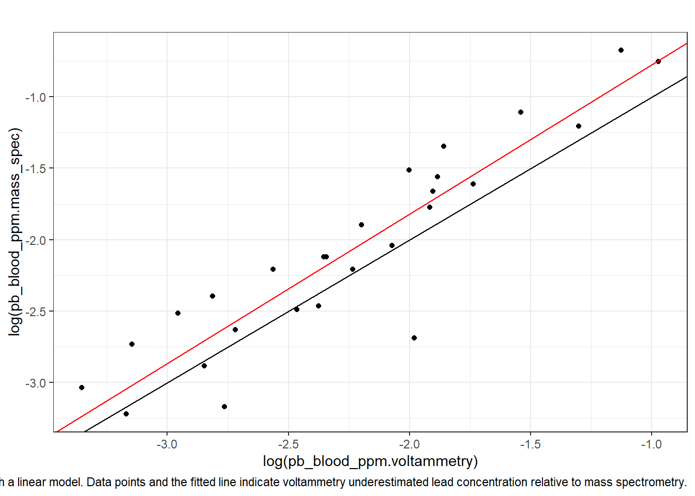
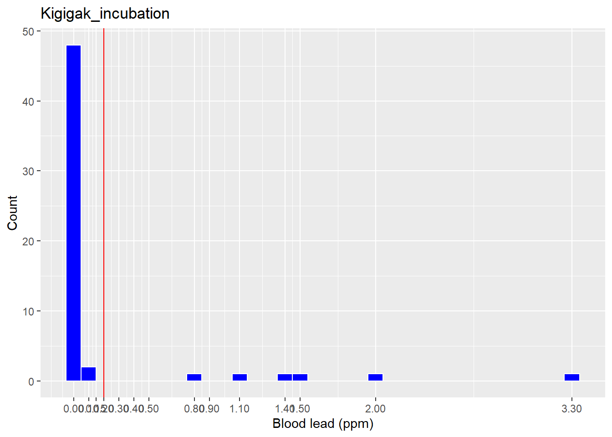
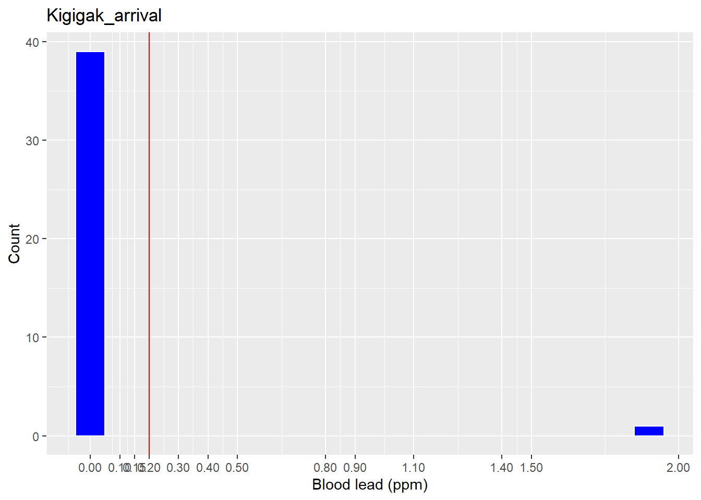
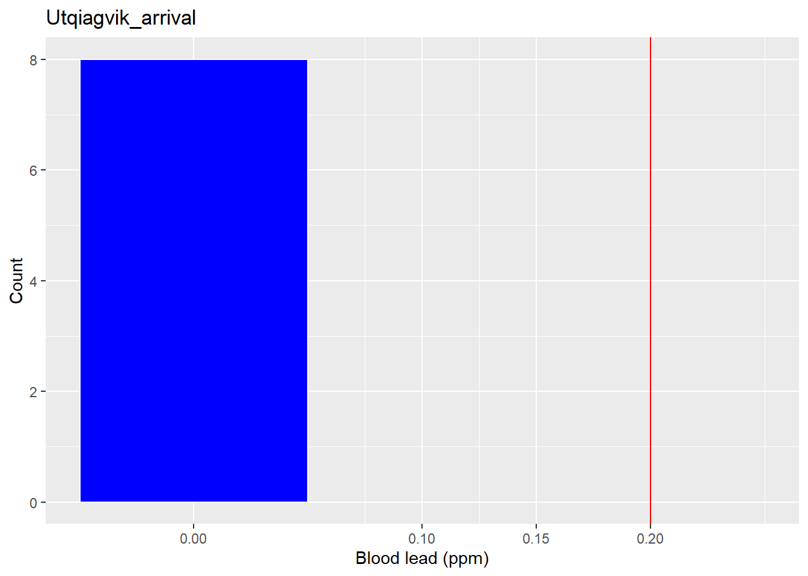
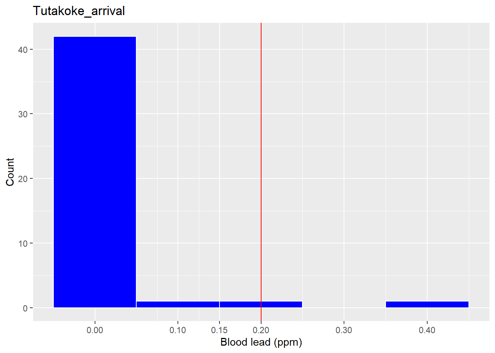
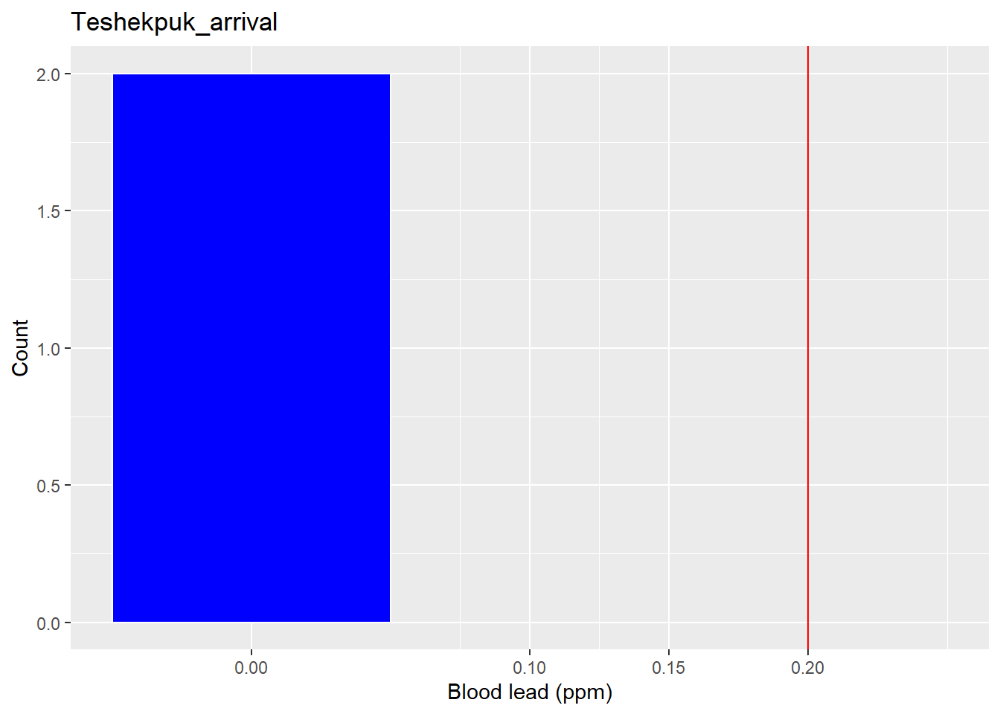
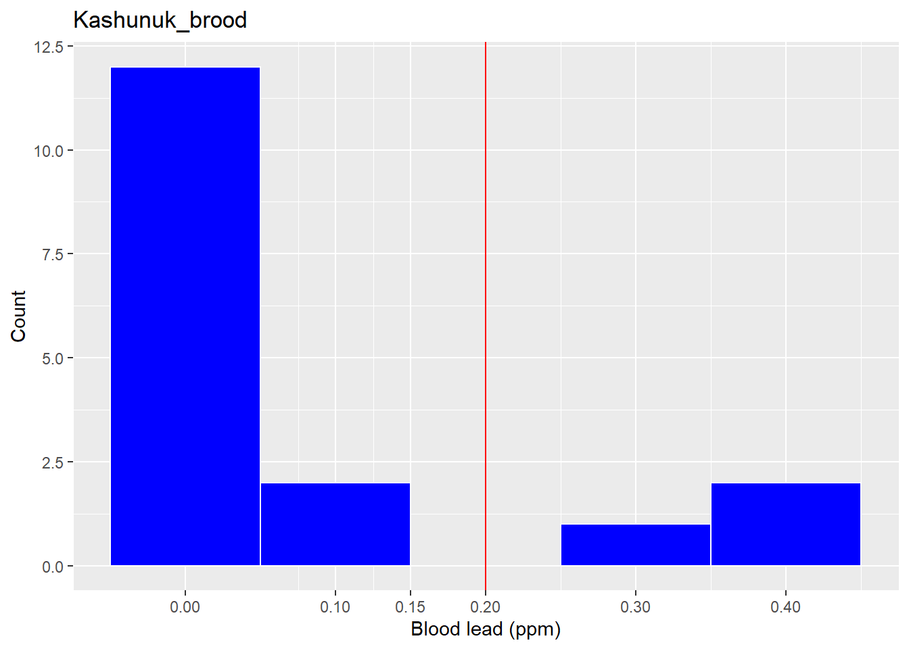

Lead Exposure in Spectacled Eiders, 2018-2025
2025-12-12
Last updated: 2025-12-12
Checks: 6 1
Knit directory: spei_lead/
This reproducible R Markdown analysis was created with workflowr (version 1.7.1). The Checks tab describes the reproducibility checks that were applied when the results were created. The Past versions tab lists the development history.
The R Markdown is untracked by Git. To know which version of the R
Markdown file created these results, you’ll want to first commit it to
the Git repo. If you’re still working on the analysis, you can ignore
this warning. When you’re finished, you can run
wflow_publish to commit the R Markdown file and build the
HTML.
Great job! The global environment was empty. Objects defined in the global environment can affect the analysis in your R Markdown file in unknown ways. For reproduciblity it’s best to always run the code in an empty environment.
The command set.seed(20230228) was run prior to running
the code in the R Markdown file. Setting a seed ensures that any results
that rely on randomness, e.g. subsampling or permutations, are
reproducible.
Great job! Recording the operating system, R version, and package versions is critical for reproducibility.
Nice! There were no cached chunks for this analysis, so you can be confident that you successfully produced the results during this run.
Great job! Using relative paths to the files within your workflowr project makes it easier to run your code on other machines.
Great! You are using Git for version control. Tracking code development and connecting the code version to the results is critical for reproducibility.
The results in this page were generated with repository version a41a727. See the Past versions tab to see a history of the changes made to the R Markdown and HTML files.
Note that you need to be careful to ensure that all relevant files for
the analysis have been committed to Git prior to generating the results
(you can use wflow_publish or
wflow_git_commit). workflowr only checks the R Markdown
file, but you know if there are other scripts or data files that it
depends on. Below is the status of the Git repository when the results
were generated:
Ignored files:
Ignored: .Rhistory
Ignored: .Rproj.user/
Ignored: admin/
Ignored: analysis/figure/
Ignored: documents/
Ignored: protocols/
Untracked files:
Untracked: analysis/map_eider_lead_fws_20251121.Rmd
Untracked: analysis/spei_pb_data_summary_20251202.Rmd
Untracked: analysis/spei_pb_data_summary_20251211.Rmd
Untracked: code/est_exp_prob_create_plots_spei_lead_20231211.R
Untracked: code/scrap_lead_summary.R
Untracked: data/7030169 data.csv
Untracked: data/README_spei_blood_lead_data.txt
Untracked: data/Rizzolo Lead VSEP22-045 E-report.xlsx
Untracked: data/eider_blood_samples_bands_utq_2022.csv
Untracked: data/eider_lead_fws.csv
Untracked: data/eider_lead_fws_2018-2022.csv
Untracked: data/eider_lead_fws_2018-2025.csv
Untracked: data/eider_lead_fws_2018-2025_20251203.csv
Untracked: data/eider_lead_fws_2023-2025_v2.csv
Untracked: data/eider_lead_fws_FOR_REP_SELECTION.csv
Untracked: data/leadcare2_validation/
Untracked: data/pb_merged_all_msResults_lc2Results_20251124.csv
Untracked: data/qtbl_pb_2023-2025.xlsx
Untracked: data/sample_id_spei_blood_lead_2018.csv
Untracked: data/samples_analyzed_2018/
Untracked: data/samples_analyzed_2022/
Untracked: data/samples_analyzed_2025/
Untracked: data/samples_leadCare2_results/
Untracked: data/sourced/
Untracked: data/spei_pb_all_2018-2025.csv
Untracked: data/spei_pb_ms_lc_20251124
Untracked: data/spei_pb_ms_lc_20251124.csv
Untracked: metadata/
Unstaged changes:
Modified: .gitignore
Modified: analysis/spei_pb_plot_validation_mass_spec_voltem.Rmd
Note that any generated files, e.g. HTML, png, CSS, etc., are not included in this status report because it is ok for generated content to have uncommitted changes.
There are no past versions. Publish this analysis with
wflow_publish() to start tracking its development.
Background
Since 2018, the US Fish and Wildlife Service Endangered Species Recovery Program has collected blood samples from Spectacled Eiders in Alaska to test for exposure to lead. Expsoure to spent lead shotgun pellets was demonstrated to have important negative local effects on spectacled eider survival in the 1990s (Flint et al. 2016 and references therein). We collected samples to estimate lead exposure rates 30 years after the use of lead pellets was prohibited in the Yukon-Kuskokwim Delta Region with the prediction that lead exposure rates have declined.
Methods
We collected blood samples opportunistically during projects that required capturing and handling spectacled eiders for other objectives. These projects included captures to deploy satellite transmitters at Kigigak Island (2018, 2023), the Tutakoke River (2018, 2022), the Kashunuk River (2022), Utqiagvik (2022), and Teshekpuk Lake (2022). We also collected samples from spectacled eiders captured for banding at Kigigak Island (2019, 2021-2025). All captures for satellite transmitter deployments occurred when eiders were arriving to the breeding areas, prior to mean nest initiation, except at the Kashunuk River and Kigigak Island in 2022 and 2023, respectively, when we captured eiders during the brood rearing period. We also collected blood samples from eiders captured during nest incubation for banding in 2019, 2021-2025. We collected the majority of samples from Spectacled Eiders on the Yukon-Kuskokwim Delta.
We captured eiders at arrival using vertical mist nets setup in lakes with decoys. During incubation, we captured females on nests using bow nets, and during brood rearing, we captured ducklings and associated females by herding broods into mist nets setup vertically in lakes.
We collected blood samples from captured eiders using venipuncture of either the jugular or tibiotarsal veins. Jugular blood samples were 1-4 mL and collected using 21-22 gauge needles and 6 mL syringes; samples were transferred into 4 mL heparinized Vaccutainers. Tibiotarsal blood samples were < 0.5 mL and collected by pricking the vein with a 25 g needle and collecting blood in 1-3 capillary tubes which were transferred into a 1 mL heparinized MicroTainer.
All samples were stored frozen in the field and laboratory until analysis. Samples with volumes > 0.5 mL were analyzed using mass spectrometry. Samples with volumes < 0.5 mL were analyzed using voltammetry.
Samples collected in 2018, all > 0.5 mL, were analyzed at the Texas A & M Agrilife Research Veterinary Integrative Biosciences Laboratory (n = 66). Samples were freeze-dried, homogenized, digested, and analyzed as dry samples. Results were converted to concentrations on the scale of wet mass using the mean moisture content for whole blood of 78.6% (CV = 2.51%). Lead concentration was determined using inductively coupled plasma-mass spectrometry Quality assurance-quality control procedures included procedural blanks (n = 4, mean blank equivalent concentration < 0.00825), duplicate samples (n = 3, mean relative difference 3.46%, range 0.38 to 7.48%), and standard reference material percent spike recoveries (mean 103.99%, range 99.16% to 107.56%). Analytical methods, results, and QAQC procedures were described in the summary report provided by TAMN (report_eider_2018_lead_7030169_results.pdf). The lower detection limit for methodology used in 2018 was < 0.00369 ppm and there was no upper limit.
Blood samples > 0.5 mL collected 2021-2025 were analyzed in two batches (samples collected 2021-2022 analyzed in 2022, n = X, 2023-2025 analyzed in 2025, n = X) at the Washington Animal Disease Diagnostic Laboratory using inductively coupled plasma mass spectrometry and nitric acid digestion. QAQC tests, including duplicates, blanks, and reference samples, were run on 10% of samples. QAQC results were all acceptable and were provided by WADDL in the file eider_lead_2022_quality_control_case_VSEP22-045E.xlsx. The lower detection limit for methodology used in 2022 and 2025 was < 0.02 ppm and there was no upper limit.
Blood samples < 0.5 mL collected 2023-2025 (n = X) were analyzed using a LeadCare II blood point-of-care blood lead testing system (Meridian Bioscience), which uses anodic stripping voltammetry to quantify lead concentration in whole blood. The Leadcare II analyzer was designed to test fresh human blood, but has been used to test previously frozen avina blood (Herring et al. 2018). Technicians in the USFWS Northern Fish and Wildlife Field Office Laboratory tested samples with LeadCare II following instructional materials and the LeadCare II User’s Guide. We also used the LeadCare II system to test a subset of samples analyzed using mass spectrometry to assess the agreement of results from the two methods using mass specrometry results as the standard for comparison. Detection limits for LeadCare II are > 0.033 ppm and < 0.65 ppm. Samples outside of this range are reported by the instrument as either high (> 0.65 ppm) or low (< 0.033).
Voltammetry Validation
The LeadCare II blood analyzer has a narrower range of detection than mass specrometry. We first compared results from LeadCare II from samples that registered as below (< 0.033 ppm) or above (> 0.65 ppm) the instrument’s detection limits to their corresponding mass specrometry values to confirm that LeadCare II lower detection limit samples were all < 0.033 ppm and all upper detection limit values values were > 0.65 ppm, according to mass spectrometry results.
We used results from samples analyzed by both methods with values within the detection limits of LeadCare II to examine how well LeadCare II results predicted mass spectrometry results using a linear model. We log transformed both mass spectrometry and LeadCare II results to meet model assumptions. We used model parameter estimates to test the hypotheses that for the association between mass specrometery values and LeadCare II values had slope of 1. Further, given evidence of bias in LeadCare II results, we used parameter estimates from the model to adjust LeadCare II values to mass spectrometry values.
Lead Exposure Thresholds
We categorized lead exposure, from mass specrometry and adjusted voltemmaetry, based on accepted thresholds: > 0.20 ppm associated with local, point-source exposure to lead; > 0.60 ppm associated with lead toxicosis.
Results
# load mass spec lead data (from Texas A&M Univ, and Washington State)
# NB samples are uniquely identified by id_metalBand AND dt_sampled (id_metalBand have been sampled on >1 dt_sampled)
ms <- read.csv("data/eider_lead_fws_2018-2025_20251203.csv") # NB [pb] in units of ppm
# format date
ms$dt_sampled <- as.Date(ms$dt_sampled, format = "%Y-%m-%d")
# check data
#sum_ms <- summary(ms)
#sum_ms
# load Lead Care II results
#lc <- read.csv("data/spei_blood_lead_validation_results_20240306.csv")
#lc <- read.csv("data/samples_leadCare2_results/data_leadCare2_results_20251125.csv")
lc <- read.csv("data/samples_leadCare2_results/data_leadCare2_results_20251203.csv") #20251203 version includes x-vars
lc$pb_blood_ppm <- lc$val_blood_lead_ug.dL*0.01 # convert lead from units of ug/dL to ppm
# remove replicates - samples measured more than once in the LeadCare II instrument, here is_replicate = 1 for the second sample result for a given sample. Removing replicate = 1 makes all LeadCare II results after this filter unique. Replicates can be used for validation of LeadCare II.
lc <- subset(lc, is_replicate != 1)
# format date
lc$dt_sampled <- as.Date(lc$dt_sampled, format = "%Y-%m-%d")
# specify relevant columns
keep <- c("id_metalBand", "pb_blood_ppm", "cat_analysis", "cat_detectLimit", "id_species", "dt_sampled", "cat_periodCapt", "id_studySite", "val_lat", "val_lon", "is_recap", "cat_sex", "cat_age", "val_bodyMass_g")
# subset to relevant columns to match ms data frame
lc <- lc[ , keep]
# check data
#sum_lc <-summary(lc)
#sum_lc
# merge ms into lc data into one dataframe, keep only SPEI data
pb <- rbind.data.frame(ms, lc)
# check data
sum_pb <- summary(pb)
#table(pb$id_species) # all spei except 1 COEI and 2 KIEI
pb <- subset(pb, id_species == "SPEI")
# create year variable
pb$year <- format(pb$dt_sampled, "%Y")
# sort
pb <- pb[order(pb$id_metalBand, pb$dt_sampled), ]
# total number of blood samples from mass spec and voltammetry, including samples analyzed > 1 time (e.g., analyzed by both mass spec and voltammetery)
n_samples_all <- nrow(pb)
# total number of UNIQUE blood samples given band ID and date sampled
n_samples_uniq <- nrow(unique(pb[c("id_metalBand", "dt_sampled")]))
# which samples have duplicate results
dups <- duplicated(pb[, c("id_metalBand", "dt_sampled")])
# number of samples (unique by band and date) analyzed > 1 time
reps <- pb[dups, ] # reps dataframe is subset of full pb data that indcludes only duplicate results from same samples
n_samples_reps <- nrow(reps) # how many duplicate samples
n_mass_spec <- nrow(subset(pb, cat_analysis == "mass_spec")) # number of samples analyzed by mass spec
n_volt <- nrow(subset(pb, cat_analysis == "voltammetry")) # number of samples analyzed by voltammetry
# change all ASY (males only) to AHY to simplify age categories to AHY and Local
pb$cat_age[pb$cat_age == "ASY"] <- "AHY"
#write.csv(pb, "data/spei_pb_all_2018-2025.csv")We analyzed 298 whole blood samples for lead concentration. We obtained results using mass spectrometry from 275 samples, and using voltammetry from 117 samples. Of those, 94 samples were analyzed using both methods.
Samples collected during arrival period were from both males and females. Incubation samples were from all females and samples from the brood rearing period were all female adults and both male and female ducklings. Sample sizes by study site, sampling period, and age class ranged from 2 blood samples from after hatch year females at Teshekpuk Lake to 162 samples from incubating females at Kigigak Island.
# create table showing sample sizes by site, capture period, and age
tbl_pb <- as.data.frame(table(pb$id_studySite, pb$cat_periodCapt, pb$cat_age))
colnames(tbl_pb) <- c("Site", "Period", "Age Class", "n") # rename columns
# remove rows with zeros (where each row is a unique site-period-age combination)
tbl_pb <- tbl_pb[tbl_pb$n != 0, ]
# format table with kable function of package knitr
kable(tbl_pb,
caption = "Table 1. Sample sizes for whole samples collected from Spectacled Eiders 2018-2025 by capture site, sampling period, and age class.",
align = c("l", "l", "l"),
digits = 0,
row.names = FALSE)| Site | Period | Age Class | n |
|---|---|---|---|
| Kigigak | arrival | AHY | 42 |
| Teshekpuk | arrival | AHY | 2 |
| Tutakoke | arrival | AHY | 47 |
| Utqiagvik | arrival | AHY | 10 |
| Kashunuk | brood | AHY | 14 |
| Kigigak | brood | AHY | 36 |
| Kigigak | incubation | AHY | 162 |
| Utqiagvik | incubation | AHY | 3 |
| Kashunuk | brood | local | 15 |
| Kigigak | brood | local | 61 |
Voltammetry Result Validation
# Create some data frames:
# pb_all_long: all lead results from both methods in one column with method used to get the results (mass spec, voltammetery) in another column
# pb_all_wide: all lead results from both methods with results from different methods in different columns
# pb_limits_long: only results from samples analyzed by both methods and within LeadCare II detection limits (0.033, 0.65) with all results in one column
# pb_limits_wide: only results from samples analyzed by both methods and within LeadCare II detection limits (0.033, 0.65) with all results in two columns
# pb_limits_both_wide
# ldl: samples analyzed by both methods with voltammetry values = 0.033 (indicates below lower limit for LeadCare II) in wide format
# udl: samples analyzed by both methods with voltammetry values = 0.65 (indicated above the upper limit for LeadCare II) in wide format
# Create pb_all_long ####
# all results in long format (same as data frame pb)
pb_all_long <- pb
# covert to wide format with separate columns for mass spec and voltammetry results, NAs for samples analyzed by only one method
pb_all_wide <- reshape(pb_all_long,
direction = "wide",
idvar = c("id_metalBand", "dt_sampled"),
timevar = "cat_analysis",
v.names = "pb_blood_ppm"
)
# Create pb_limits_long ####
# results within LeadCare II limits in long format
pb_limits_long <- subset(pb_all_long, pb_blood_ppm < 0.65 & pb_blood_ppm > 0.033) # remove records from both analysis methods based on LeadCare II limits
# Create pb_limits_wide ####
# results within LeadCare II limits for only samples analyzed by BOTH methods
pb_limits_wide <- reshape(pb_limits_long,
direction = "wide",
idvar = c("id_metalBand", "dt_sampled"),
timevar = "cat_analysis",
v.names = "pb_blood_ppm"
)
# finalize pb_limits_wide by removing records with NAs in either analysis result column
pb_limits_wide <- pb_limits_wide[complete.cases(pb_limits_wide[, c("pb_blood_ppm.mass_spec", "pb_blood_ppm.voltammetry")]), ]
# temp: is the above working like it is supposed to be?
# create pb_limits_both_wide ####
# all data but only for samples analyzed by both methods, in wide format
pb_both_wide <- pb_all_wide[complete.cases(pb_all_wide[, c("pb_blood_ppm.mass_spec", "pb_blood_ppm.voltammetry")]), ]
# Create ldl ####
# ldl: records with voltammetry results returned as below detection limit, entered as 0.033 ppm
ldl <- subset(pb_both_wide, pb_blood_ppm.voltammetry == 0.033)
# Create udl ####
# udl: records with voltammetry results returned as above detection limit, entered as 0.65 ppm
udl <- subset(pb_both_wide, pb_blood_ppm.voltammetry == 0.65)
# Compare results between methods at LeadCare II detection limits (0.033, 0.65) ####
# do all results from voltammetry that were tested as below lower detection limit have values from mass spec < 0.033? ####
n_volt_ldl <- nrow(ldl)
n_ms_match_volt_ldl <- nrow(subset(ldl, pb_blood_ppm.mass_spec < 0.034))
pct_match_ldl <- (n_ms_match_volt_ldl/n_volt_ldl)*100
pct_match_ldl <- sprintf("%.1f", pct_match_ldl)
# do all results from voltammetry that were tested as above the upper detection limit have values from mass spec < 0.65? ####
n_volt_udl <- nrow(udl)
n_ms_match_volt_udl <- nrow(subset(udl, pb_blood_ppm.mass_spec > 0.65))
pct_match_udl <- (n_ms_match_volt_udl/n_volt_udl)*100
pct_match_udl <- sprintf("%.1f", pct_match_udl)
# Data within the LeadCare II detection limits
# Two approaches here:
# 1. linear model (m0) with lead results within LeadCare II detection limits as response and method type (mass spec, voltammetry) as the explanatory variable to test the hypothesis that methods differ based on parameter estimate for the method not used as the reference level
# Apprach 1 (m0) is commented out because I don't use the results
# 2. linear model (m67) with only results from samples analyzed by both methods in wide format and with values within LeadCare II detection limits. This model treats mass spec results as the response variable and voltammetry results as the explanatory variable and tests the hypothesis that the methods agree with intercept = 0 and slope = 1. (approach in Herring et al. 2018)
# Linear model m1 ####
# fit model m0 with log-transformed ppm to better approximate normal residuals and analysis type (mass spec or voltammetry) as x-var
# use only data within detection limits of LeadCare II that were analyzed by both methods
#m0 <- lm(log(pb_blood_ppm) ~ cat_analysis, data = pb_limits_wide)
#summary(m0)
#confint(m0) # no diff between methods, but most of the 95% CI around the voltammetry parameter lies below zero
#plot(m0) # data meets model assumptions
#backtrasform from log scale to median (not mean) ppm scale
#m0_massSpec_median <- exp(coef(m0)[1]) # backtransformed intercept = mass spec median value in ppm
#m0_voltam_median <- exp(coef(m0)[1]+coef(m0)[2]) # backtransformed int + voltamm coeff = voltammetry median in ppm
#m0_diff_in_medians <- exp(coef(m0)[2]) # difference between mass spec and voltamm medians in ppm
#m0_log_fitted_medians <-emmeans(m0, "cat_analysis") # get mean by method on log scale with emmeans package
#m0_log_fitted_medians
# backtransform fitted medians on ppm scale
#m0_ppm_grid <- ref_grid(m0) # set reference grid (https://cran.r-project.org/web/packages/emmeans/vignettes/transformations.html)
#m0_ppm_fitted_medians <- emmeans(regrid(m0_ppm_grid), "cat_analysis") # get medians on ppm scale
#summary(m0_ppm_fitted_medians)
#plot(m0_ppm_fitted_medians)
# summary: using all validation data, median values from LeadCare II and mass spec are not convincingly different
# medians differed by 0.02 ppm with LC2 values < mass spec, but broadly overlapping 95% CI (that include each other's median point estimates)
# Linear model m67 ####
# treat mass spec results as the response and voltammery results as x-var, both log transformed and using data within the LC2 detection limits
m67 <- lm(log(pb_blood_ppm.mass_spec) ~ log(pb_blood_ppm.voltammetry) , data = pb_limits_wide)
summary(m67)
Call:
lm(formula = log(pb_blood_ppm.mass_spec) ~ log(pb_blood_ppm.voltammetry),
data = pb_limits_wide)
Residuals:
Min 1Q Median 3Q Max
-0.8895 -0.1444 0.0578 0.2165 0.3234
Coefficients:
Estimate Std. Error t value Pr(>|t|)
(Intercept) 0.27281 0.20868 1.307 0.203
log(pb_blood_ppm.voltammetry) 1.04598 0.08975 11.654 1.34e-11 ***
---
Signif. codes: 0 '***' 0.001 '**' 0.01 '*' 0.05 '.' 0.1 ' ' 1
Residual standard error: 0.283 on 25 degrees of freedom
Multiple R-squared: 0.8445, Adjusted R-squared: 0.8383
F-statistic: 135.8 on 1 and 25 DF, p-value: 1.341e-11confint(m67) 2.5 % 97.5 %
(Intercept) -0.1569731 0.7026016
log(pb_blood_ppm.voltammetry) 0.8611322 1.2308233#plot(m67)
p.m67 <- ggplot(data = pb_limits_wide, aes(y = log(pb_blood_ppm.mass_spec), x = log(pb_blood_ppm.voltammetry)))+
geom_point()+
geom_abline(slope = 1, intercept = 0)+
geom_abline(intercept = coef(m67)[1], slope = coef(m67)[2], , color = "red")+
theme_bw() +
labs(title = "",
caption = "Lead concentration in blood samples collected from Spectacled Eiders 2018-2025 and anylazed using both mass spectrometry and voltammetery. The black line indicates perfect correspondance between the two methods. The red line is mean relationship between the methods estimated with a linear model. Data points and the fitted line indicate voltammetry underestimated lead concentration relative to mass spectrometry.")
p.m67
# covert voltam values to mass spec values given regression equations, NB calculation happens on the log scale
pb_limits_wide$fitted <- coef(m67)[1] + coef(m67)[2] * log(pb_limits_wide$pb_blood_ppm.voltammetry)
p.m67_fit <- ggplot(data = pb_limits_wide, aes(y = log(pb_blood_ppm.mass_spec), x = fitted))+
geom_point()+
geom_abline(slope = 1, intercept = 0)+
theme_bw()
#p.m67_fit
diff_ms_volt <- mean(pb_limits_wide$pb_blood_ppm.mass_spec-pb_limits_wide$pb_blood_ppm.voltammetry)
diff_ms_fit <- mean(pb_limits_wide$pb_blood_ppm.mass_spec- exp(pb_limits_wide$fitted))Of the voltammetry results less than the lower detection limit of the method (0.033 ppm), 83.6 % (46 of 55 samples) had mass spectrometry results < 0.033 ppm. Of the 55 samples that tested below the lower detection limit, all but 9 (16.4%) had mass spectrometry values < 0.033 ppm).The mass specrometry results from samples that were above LeadCare II detection limits that when analyzed by LeadCare II were below the instruments 0.033 ppm detection limit ranged from 0.034 to 0.064 ppm (mean 0.045 ppm, 0.012 ppm mean deviation from the voltammetry lower detection limit).
Of the voltammetry results greater than the upper detection limit of the method (0.65 ppm), 100.0 % (5 of 5 samples) had mass spectrometry results > 0.65 ppm. All 5 samples above the LeadCare II detection limit had mass spectrometry values also < 0.65 ppm.
The slope parameter estimated with the log-log model fit to 27 samples analyzed by both mass spectrometry and voltammetry (log scale 1.05, 95% CI 0.86, 1.24) suggested a negative bias in voltammetry values wtih bias increasing with increasing lead concentrations, as determined with mass spectometry Fig. 1).
Given a 10% increase in lead concentration determined by voltammetry, lead concentration assessed by mass specrometry increased by only 8.5%. The slope estimate was not convincingly different from one; however, given the small sample size (n = 27 samples) and results from previous studies that have consistently shown a negative bias in LeadCare II results from avian blood, we adjusted LeadCare II results prior to lead exposure classification. We used the linear model parameters and LeadCare II results to get fitted values that adjusted the LeadCare II results to approximate results from mass spectrometry and back transformed these from the log scale.
The mean difference between across paired results was 0.0326296 before voltammetry results were adjusted and 0.0063298 after adjustment.
# what really matters are the lead concentration threasholds, so compare how samples are classified into exposure categories between methods
# create indicator variables for threshold for both instruments and compare
# use all samples that were tested using both methods (regardless of pb concentration)
# create wide-format data set of all pb values
pb_wide <- reshape(pb,
direction = "wide",
idvar = c("id_metalBand", "dt_sampled"),
timevar = "cat_analysis",
v.names = "pb_blood_ppm"
)
# remove records with NAs indicating sample was only analyzed using one method
pb_valid_wide <- pb_wide[complete.cases(pb_wide[, c("pb_blood_ppm.mass_spec", "pb_blood_ppm.voltammetry")]), ]
# classify samples by analysis method
pb_valid_wide$is_exposed_lc <- ifelse(pb_valid_wide$pb_blood_ppm.voltammetry >= 0.2, 1,0)
pb_valid_wide$is_toxicosis_lc <- ifelse(pb_valid_wide$pb_blood_ppm.voltammetry >= 0.6, 1,0)
pb_valid_wide$is_exposed_ms <- ifelse(pb_valid_wide$pb_blood_ppm.mass_spec >= 0.2, 1,0)
pb_valid_wide$is_toxicosis_ms <- ifelse(pb_valid_wide$pb_blood_ppm.mass_spec >= 0.6, 1,0)
pct_exp_lc <- (sum(pb_valid_wide$is_exposed_lc)/nrow(pb_valid_wide))*100
pct_exp_ms <- (sum(pb_valid_wide$is_exposed_ms)/nrow(pb_valid_wide))*100
n_exp_lc <- sum(pb_valid_wide$is_exposed_lc)
n_exp_ms <- sum(pb_valid_wide$is_exposed_ms)
pct_tox_lc <- (sum(pb_valid_wide$is_toxicosis_lc)/nrow(pb_valid_wide))*100
pct_tox_ms <- (sum(pb_valid_wide$is_toxicosis_ms)/nrow(pb_valid_wide))*100
n_tox_lc <- sum(pb_valid_wide$is_toxicosis_lc)
n_tox_ms <- sum(pb_valid_wide$is_toxicosis_ms)Based on the complete set of lead concentration values analyzed by both mass spectrometry and voltammetry (n = 93), LeadCare II underestimated the percentage of lead exposed (10.7% vs. 15.0%) and lead toxicosis samples (5.4% vs. 6.4%).
Given results within the detection limit of LeadCareII (n = 36), log-log linear model results indicate LeadCare II results were biased low compared to mass spectrometry results. Given a 1% increase in mass spectrometry lead concentration, Leadcare II lead concentration increased by 0.69% (95% confidence interval 0.59%, 0.79%)
The log-log linear model met linear model assumptions. The estimate for the intercept did not differ from zero (0.134, 95% CI -0.19, 0.47) and the estimated slope did not diff from 1 (0.97, 95% CI 0.85, 1.10). We proceed to use unadjusted LeadCare II results acknowledging the method underestimates lead exposure.
##Lead Exposure Rates
# prepare data by removing validation samples analyzed in Leadcare II that were also analyzed by mass spec
pb_all_long$is_duplicate_all <- duplicated(pb_all_long[c("id_metalBand", "dt_sampled")]) | duplicated(pb_all_long[c("id_metalBand", "dt_sampled")], fromLast = TRUE)
# remove duplicate records with cat_method = voltammetry
lead_spei <- subset(pb_all_long, is_duplicate_all == FALSE & cat_analysis == "mass_spec")
# create indicator variable for lead levels <= 0.20
lead_spei$exposed <- ifelse(lead_spei$pb_blood_ppm >= 0.20, 1,0)
lead_spei$notexp <- ifelse(lead_spei$pb_blood_ppm <= 0.20, 1,0)
# aggregate by site and period
lead_spei_exp <- aggregate(lead_spei$exposed ~ lead_spei$id_studySite*lead_spei$cat_periodCapt, FUN = "sum")
lead_spei_notexp <- aggregate(lead_spei$notexp ~ lead_spei$id_studySite*lead_spei$cat_periodCapt, FUN = "sum")
# cbind
lead_table <- cbind.data.frame(lead_spei_exp[1:3], lead_spei_notexp[3])
colnames(lead_table) <- c("Study site", "Status", "No. exposed", "No. unexposed")
# calc prop exp
lead_table$`Proportion exposed` <- as.numeric(lead_table$`No. exposed`/(lead_table$`No. exposed`+lead_table$`No. unexposed`))
lead_table[ , 5] = round(lead_table[ ,5], 2)
# sort
lead_table <- lead_table[order(lead_table$`Study site`, lead_table$Status, decreasing = FALSE), ]
# Table formatting in Kable package
t1 <- kbl(lead_table[ ,1:5], caption="Spectacled Eider blood lead levels above 0.20 ppm (exposed) and below 0.20 ppm (unexposed) from samples collected on the Yukon-Kuskokwim Delta and Arctic Coastal Plain, Alaska, 2018-2022.")
kable_styling(t1,bootstrap_options="striped", full_width=FALSE, position="center")| Study site | Status | No. exposed | No. unexposed | Proportion exposed | |
|---|---|---|---|---|---|
| 5 | Kashunuk | brood | 3 | 14 | 0.18 |
| 1 | Kigigak | arrival | 1 | 39 | 0.03 |
| 6 | Kigigak | brood | 0 | 11 | 0.00 |
| 7 | Kigigak | incubation | 6 | 50 | 0.11 |
| 2 | Teshekpuk | arrival | 0 | 2 | 0.00 |
| 3 | Tutakoke | arrival | 1 | 44 | 0.02 |
| 4 | Utqiagvik | arrival | 0 | 8 | 0.00 |
| 8 | Utqiagvik | incubation | 0 | 3 | 0.00 |
Histograms by site and capture period
# create site-capture period variable for partitioning data for histograms
lead_spei$site_stage <- paste(lead_spei$id_studySite, lead_spei$cat_periodCapt, sep = "_")
# create histograms
for(var in unique(lead_spei$site_stage)){
print(ggplot(lead_spei[lead_spei$site_stage==var,], aes(pb_blood_ppm)) +
geom_histogram(binwidth = 0.1,
color = "white",
fill = "blue") +
# put x-axis labels where there are values
scale_x_continuous(name = "Blood lead (ppm)", breaks = c(0.0, 0.15, 0.1, 0.2, 0.3, 0.4, 0.5, 0.8, 0.9, 1.1, 1.4, 1.5, 2.0, 3.3, 8.9)) +
scale_y_continuous(name = "Count") +
geom_vline(xintercept = 0.20, color = "red") + # line at level interpreted as indicating exposure
ggtitle(label = var)
)
}






sessionInfo()R version 4.5.1 (2025-06-13 ucrt)
Platform: x86_64-w64-mingw32/x64
Running under: Windows 11 x64 (build 22631)
Matrix products: default
LAPACK version 3.12.1
locale:
[1] LC_COLLATE=English_United States.utf8
[2] LC_CTYPE=English_United States.utf8
[3] LC_MONETARY=English_United States.utf8
[4] LC_NUMERIC=C
[5] LC_TIME=English_United States.utf8
time zone: America/Anchorage
tzcode source: internal
attached base packages:
[1] stats graphics grDevices utils datasets methods base
other attached packages:
[1] kableExtra_1.4.0 emmeans_1.11.2 knitr_1.50 plotly_4.11.0
[5] ggplot2_3.5.2
loaded via a namespace (and not attached):
[1] sass_0.4.10 generics_0.1.4 tidyr_1.3.1 xml2_1.3.8
[5] lattice_0.22-7 stringi_1.8.7 digest_0.6.37 magrittr_2.0.3
[9] evaluate_1.0.4 grid_4.5.1 estimability_1.5.1 RColorBrewer_1.1-3
[13] mvtnorm_1.3-3 fastmap_1.2.0 rprojroot_2.1.0 workflowr_1.7.1
[17] jsonlite_2.0.0 promises_1.3.3 httr_1.4.7 purrr_1.1.0
[21] viridisLite_0.4.2 scales_1.4.0 textshaping_1.0.1 lazyeval_0.2.2
[25] jquerylib_0.1.4 cli_3.6.5 rlang_1.1.6 withr_3.0.2
[29] cachem_1.1.0 yaml_2.3.10 tools_4.5.1 coda_0.19-4.1
[33] dplyr_1.1.4 httpuv_1.6.16 vctrs_0.6.5 R6_2.6.1
[37] lifecycle_1.0.4 git2r_0.36.2 stringr_1.5.1 fs_1.6.6
[41] htmlwidgets_1.6.4 pkgconfig_2.0.3 pillar_1.11.0 bslib_0.9.0
[45] later_1.4.2 gtable_0.3.6 glue_1.8.0 data.table_1.17.8
[49] Rcpp_1.1.0 systemfonts_1.2.3 xfun_0.52 tibble_3.3.0
[53] tidyselect_1.2.1 rstudioapi_0.17.1 xtable_1.8-4 farver_2.1.2
[57] htmltools_0.5.8.1 labeling_0.4.3 svglite_2.2.1 rmarkdown_2.29
[61] compiler_4.5.1